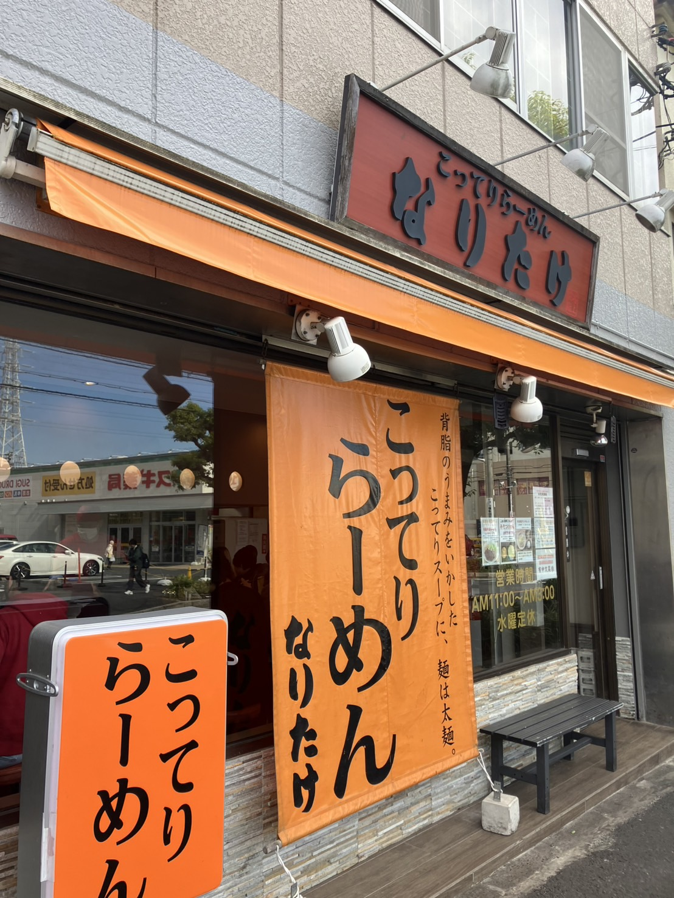
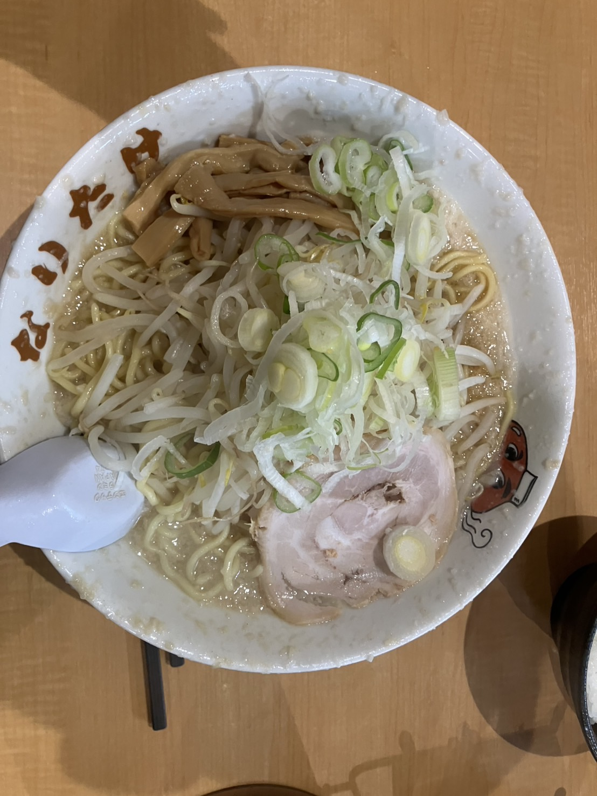

| 特徴 | つけ麺が人気で、魚介ベースのスープが特徴です。 |
|---|---|
| アクセス | 約5分 |
| 住所 | 千葉県習志野市津田沼2-5-9 |
| 電話番号 | 情報なし |
| 営業時間・定休日 |
|
| 公式サイト | 必勝軒 |


| 特徴 | コクのあるこってりスープに自家製の中太麺が楽しめるお店。 |
|---|---|
| アクセス | 約5分 |
| 住所 | 千葉県船橋市前原西2-11-7 |
| 電話番号 | 047-477-7987 |
| 営業時間・定休日 |
|
| 公式サイト | こってりラーメンなりたけ |